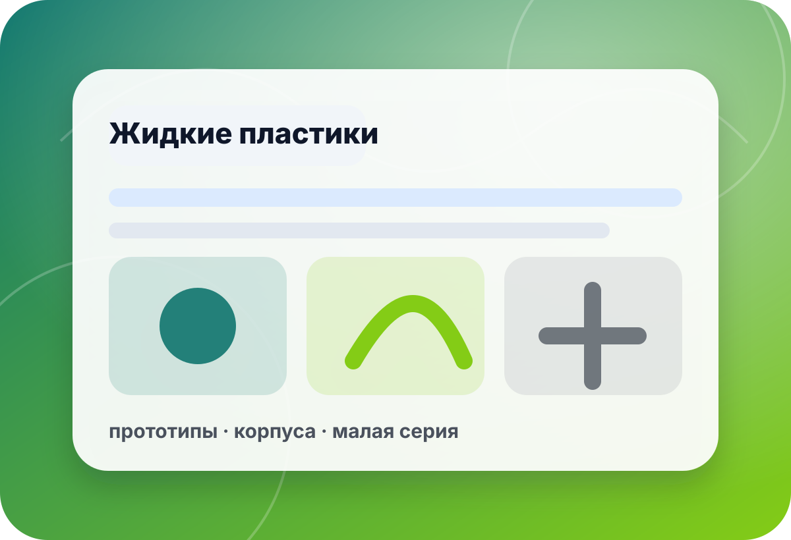

подкатегория · красители для пластиков
Краситель под систему пластика, толщину детали и финиш
Цвет отливки зависит от совместимости пигмента, базового пластика, толщины слоя, формы и последующей обработки. В preview не публикуем неподтверждённые цены, наличие и дозировки — цвет лучше проверять на малой пробе.
- система
- пластик
- цвет
- пигмент
- слой
- толщина
- проба
- образец
быстрый выбор
Сначала проверьте базовый пластик
Один и тот же краситель может по-разному выглядеть в тонкой детали, массивной отливке или прозрачной системе.
Пластик ещё не выбранОпределите прочность, скорость, форму и финиш детали до выбора цвета.К жидким пластикам →Нужна не только окраскаНаполнители, пудры и ускорители могут влиять на цвет и процесс заливки.К добавкам →Важна чистая поверхностьПигмент может изменить вязкость и поведение пузырей — проверьте дегазацию.Подобрать вакуум →
связанные разделы
Соберите цветной процесс
Перед серией сделайте тестовую отливку: цвет, отверждение и поверхность нельзя надёжно оценить только по названию.
 ▣
▣Жидкие пластики
Базовый материал определяет цвет, прочность и время работы.
- система
- толщина
- форма
 ✦
✦PolyColor
Цветовые решения для совместимых пластиков и задач.
- цвет
- серия
- проба

◎Пудры и глиттеры
Для декоративных эффектов с проверкой перемешивания и поверхности.
- эффект
- слой
- финиш
Наполнители
Могут менять оттенок, вес, вязкость и фактуру отливки.
- масса
- вязкость
- поверхность
◌Форма и разделитель
Разделитель и поверхность формы могут влиять на вид цветной детали.
- съём
- форма
- финиш
Подбор оттенка
Опишите изделие, пластик и желаемый цвет — поможем выбрать маршрут проверки.
- оттенок
- изделие
- серия
чек-лист
Что проверить перед окрашиванием
Совместимость
Пигмент не должен мешать отверждению и рабочему времени пластика.
Уточнить:серия · инструкция · пропорция · срокТолщина детали
В тонком и толстом слое один оттенок может выглядеть по-разному.
Уточнить:толщина · прозрачность · укрывистость · объёмФинишная обработка
Шлифовка, покрытие или окраска сверху могут изменить итоговый цвет.
Уточнить:шлифовка · лак · покраска · фактураТестовый образец
Проба помогает оценить цвет, пузырьки, отверждение и поверхность.
Уточнить:образец · время · результат · сериямини-бриф
Опишите цвет и деталь — подберём краситель
Форма в preview не отправляет данные на сервер. Для реального запуска подключается CRM/почта/мессенджер после согласования.